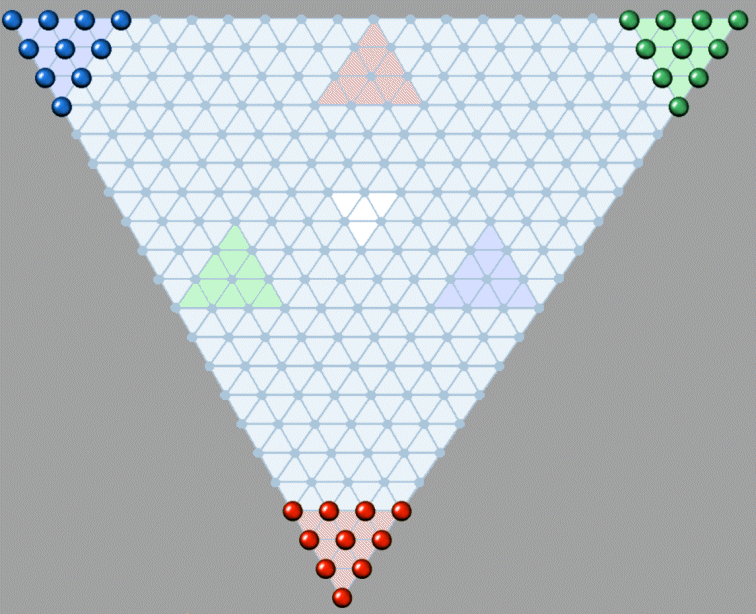

Foldable Trio board (Photo: Peter Michaelsen).
Foldable Trio board (Photo: Peter Michaelsen).
In Trio, you must move your marbles into the opposite empty goal triangle before your opponents manage to fill their own. The game is won as soon as the opposite triangle is completely filled with marbles of any colour. Players alternate turns, moving one marble at a time. Trio was published by Adolf Sala Verlag between 1894 and 1898 and is the direct predecessor of Chinese Checkers, which appeared in the United States in 1928. According to the original rules, players are not allowed to move into the goal triangles, in order to prevent blocking. In this implementation, however, victory is achieved when the goal triangle is filled with marbles of any colour, which removes the purpose of blocking entirely.
A marble can move in two ways: it may slide to an adjacent empty space, or it may jump over an adjacent marble, of either colour, into the empty space directly on the opposite side. A marble may continue jumping as long as each jump is legal, or the player may choose to stop early. To end a jumping sequence before all possible jumps are taken, select Pass Move from the menu or toolbar. No marbles are ever captured in Trio.
The best strategy is to try and advance faster by chaining a series of jumps. This is better than sliding your marbles forward one space at a time. The most effective strategy is to arrange your marbles in long, continuous sequences that can be jumped over, creating a kind of bridge toward the opposite side. Just be careful that your opponent doesn’t end up using these bridges more effectively than you do.
Super Trio is an alternative variant where a marble may jump across multiple empty spaces in a single leap, provided there is exactly one marble in the middle space of the jump. It is a faster version of the standard game, and likely an improvement.
Foldable Trio board (Photo: Peter Michaelsen).
Reference
Trio rules booklet (Danish).
© M. Winther, 2026 March